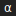

🌌 Algorithms That Invent Algorithms — <br>**AI‑GA Meta‑Evolution Demo**
AI‑GA Meta‑Evolution Demo Alpha‑Factory v1 👁️✨ — Multi‑Agent **AGENTIC α‑AGI**
 Demo – **“Infinite Bloom 3.0”**")
Large‑Scale α‑AGI Business 👁️✨ ($AGIALPHA) Demo – **“Infinite Bloom 3.0”**
**Global markets seep *trillions* in latent opportunity** — *alpha* in the broadest sense: pricing dislocations • supply‑chain inefficiencies • novel drug targets • policy loopholes • unexplored material designs. **Alpha‑Factory v1** turns that raw potential into deployable breakthroughs, *autonomously*.

🏛️ Large‑Scale α‑AGI Business 3 👁️✨ — **Omega‑Grade Edition**
**Alpha‑Factory v1 → Ω‑Lattice v0** _Transmuting cosmological free‑energy gradients into compounding cash‑flows._

Alpha Agi Business V1
Large‑Scale α‑AGI Business 👁️✨ $AGIALPHA using Alpha‑Factory v1 multi‑agent stack, on‑chain incentives & antifragile safety‑loops.
")
α‑AGI Insight 👁️✨ — Beyond Human Foresight — Official Demo (Zero Data)
The **α‑AGI Insight** demo predicts which industry sector is most likely to be transformed by Artificial General Intelligence. It runs a small

α‑AGI Insight v1 — Beyond Human Foresight
🎖️ α-AGI Insight 👁️✨ — Beyond Human Foresight Version 1.1 (2025-07-15)

Alpha Agi Marketplace V1
Large‑Scale α‑AGI Marketplace 👁️✨ $AGIALPHA hunt exploitable alpha 🎯 and convert it into tangible value 💎.

Alpha Asi World Model
Use the **Offline/OpenAI API** toggle below the chart to run locally or with your own API key. Keys never leave your browser. README ░α-ASI World-Model Demo ░ Alpha-Factory v1 👁️✨

👁️ Alpha-Factory v1 — Cross-Industry **AGENTIC α-AGI** Demo
Current demo version: `1.0.0`. *Out-learn • Out-think • Out-design • Out-strategise • Out-execute*

Era Of Experience
Era‑of‑Experience Demo Alpha‑Factory v1 👁️✨ — Multi‑Agent AGENTIC α‑AGI

Alpha‑Factory Demos 📊
Welcome! These short demos let **anyone – even if you’ve never touched a terminal – spin up Alpha‑Factory, watch a live trade, and explore the

🌐 Macro‑Sentinel · Alpha‑Factory v1 👁️✨
*Cross‑asset macro risk radar powered by multi‑agent α‑AGI* **TL;DR** Spin up a self‑healing stack that ingests macro telemetry, runs a Monte‑Carlo risk engine, sizes an ES hedge, and explains its reasoning—all behind a Gradio dashboard.

Meta‑Agentic α‑AGI 👁️✨ Demo – **Production‑Grade v0.1.0**
**Official definition – Meta-Agentic (adj.)** *Describes an agent whose **primary role** is to **create, select, evaluate, or re‑configure other agents** and the rules governing their interactions, thereby exercising **second‑order agency** over a population of first‑order agents.*

Meta‑Agentic α‑AGI 👁️✨ Demo v2 – **Production‑Grade v0.1.0**
Identical to **v1** plus a statistical-physics wrapper that logs and minimises **Gibbs / variational free-energy** for each candidate agent during the evolutionary search. *Metric toggle*: `configs/default.yml → physics_metric: free_energy`
**")
**Meta‑Agentic α‑AGI 👁️✨ Demo v3 — AZR‑Powered “Alpha‑Factory v1” (Production‑Grade v0.3.0)**
Identical to **v1** plus **two synergistic upgrades** 1. *Statistical‑physics wrapper* — logs & minimises **Gibbs / variational free‑energy** for every candidate agent.
 Demo — v0")
Meta‑Agentic Tree Search (MATS) Demo — v0
**Abstract:** We pioneer **Meta-Agentic Tree Search (MATS)**, a novel framework for autonomous multi-agent decision optimization in complex strategic domains. MATS enables intelligent agents to collaboratively navigate and optimize high-dimensional strategic search spaces through **recursive agent-to-agent interactions**. In this **second-order agentic** scheme, each agent in the system iteratively refines the intermediate strategies proposed by other agents, yielding a self-improving decision-making process. This recursive optimization mechanism systematically uncovers latent inefficiencies and unexploited opportunities that static or single-agent approaches often overlook. **Status:** Experimental · Proof‑of‑Concept · Alpha
🌟 **Mastery Without a Rule‑Book** — watch MuZero think in real time
MuZero Planning Demo Alpha‑Factory v1 👁️✨ — Multi‑Agent **AGENTIC α‑AGI**

MuZero MCTS LLM Agent Demo
This folder contains a prototype integration of a Monte Carlo Tree Search (MCTS) agent with language model guidance. Run `install_and_launch.sh` to build the environment and start the demo in your browser. 1. Ensure Python 3.9+ is installed.
OMNI-Factory: An Open-Ended Multi-Agent Simulation for Smart City Resilience (OMNI-EPIC + Alpha-Factory v1)
Run the full demo interactively in [Google Colab](colab_omni_factory_demo.ipynb). To verify local prerequisites before launching the demo, run:

🔧 **Self‑Healing Repo** — when CI fails, agents patch
Use the mode toggle in the demo to switch between the offline Pyodide simulation and OpenAI API mode. Any key entered is kept in memory only. Self‑Healing Repo Demo
![Solving **α-AGI Governance** [![Open In Colab]][colab-notebook]](solving_agi_governance/assets/preview.svg "Solving **α-AGI Governance** [![Open In Colab]][colab-notebook]")
Solving **α-AGI Governance** [![Open In Colab]][colab-notebook]
Choose **Offline** or **OpenAI API** using the toggle under the chart. The demo stores your API key only for the current session. *Minimal Conditions for Stable, Antifragile Multi-Agent Order*

Sovereign Agentic AGI Alpha Agent Demo
A minimal showcase of a self-directed agent with token-gated access. Run `./deploy_sovereign_agentic_agialpha_agent_v0.sh` to build and launch the containerized environment.

Demo Utilities
This directory holds helper utilities shared across demos, such as `disclaimer.py` which exposes the standard project disclaimer.